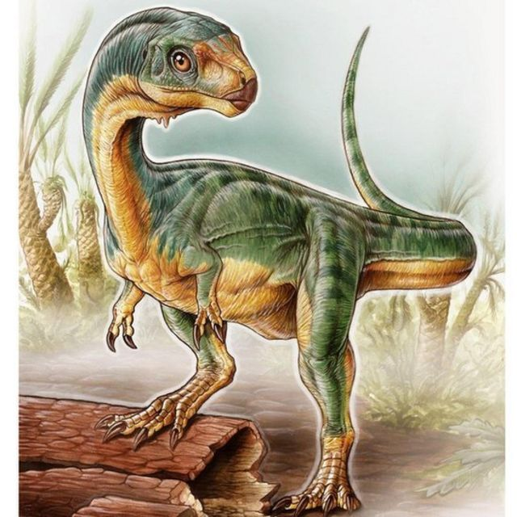

Al igual que en la mayoría de los países del mundo, en Chile se han realizado hallazgos de fósiles atribuibles a los dinosaurios que habitaron la tierra hace más de 150 millones de años. No obstante, los restos encontrados corresponden, en su mayoría, a especies ya caracterizadas en otros continentes, debido a que en la época en que los dinosaurios vivieron existía un solo gran continente llamado Pangea.
 Sin embargo, el año 2015 la historia de la paleontología en nuestro país cambió para siempre. El director de Geología de la Universidad Andrés Bello, Dr. Manuel Suárez, junto al paleontólogo argentino, Dr. Fernando Novas y a los expertos Leonardo Salgado, Federico Agnolín, Martín Ezcurra, Nicolás Chimento, Rita de la Cruz, Marcelo Isasi, Alexander Vargas, y David Rubilar-Rogers; dieron a conocer un estudio que muestra un dinosaurio descubierto en la Patagonia chilena y que posee características nunca antes vistas.
El artículo fue publicado en la prestigiosa revista Nature y en él se describe el hallazgo del Dr. Manuel Suárez, el cual sucedió en la localidad de Mallín Grande, a 80 kilómetros de Chile Chico; y que corresponde al primer dinosaurio del periodo
Jurásico encontrado en Chile.
“El dinosaurio descubierto y estudiado recibe el nombre de Chilesaurus diegosuarezi, ésta última palabra en honor a mi hijo Diego, quien hizo el hallazgo cuando tenía siete años. Registra características que sin dudas han captado la atención de la comunidad científica mundial, ya que es uno de los dinosaurios más extraños del mundo descubiertos hasta ahora. Pertenece al grupo de los terópodos junto a carnívoros como el Velociraptor y el Tyrannosaurus, pero también posee características como un cráneo pequeño y dientes en forma de hoja, lo que permite concluir que tuvo una dieta herbívora”, destacó el académico UNAB.
Por su parte, el Dr. Fernando Novas, paleontólogo del Museo Argentino de Ciencias Naturales Bernardino Rivadavia en Buenos Aries, agregó que “no tenemos registros a nivel mundial de que el Chilesaurus haya tenido algún pariente cercano, y menos aún algún descendiente. Nuestro objetivo para próximas expediciones será develar, a partir de rocas más antiguas, cuáles fueron sus antepasados y en qué especies pudo derivar”, expresó el Dr. Novas.
Según expuso el Dr. Manuel Suárez, el hallazgo del Chilesaurus “se realizó en zonas de 1.400 metros de altura. En estas zonas encontramos las rocas que contenían los restos óseos del dinosaurio. Se trata de rocas sedimentarias conformadas por gruesos fragmentos de otras rocas, depositadas por procesos violentos y de alta energía, como aluviones. Además, contenían minerales marinos y pedazos de rocas volcánicas con una data de 148 millones de años”.
Destacado: El Chilesaurus diegosuarezi tiene una antigüedad de 148 millones de años, posicionándose como el dinosaurio más antiguo encontrado en Sudamérica.